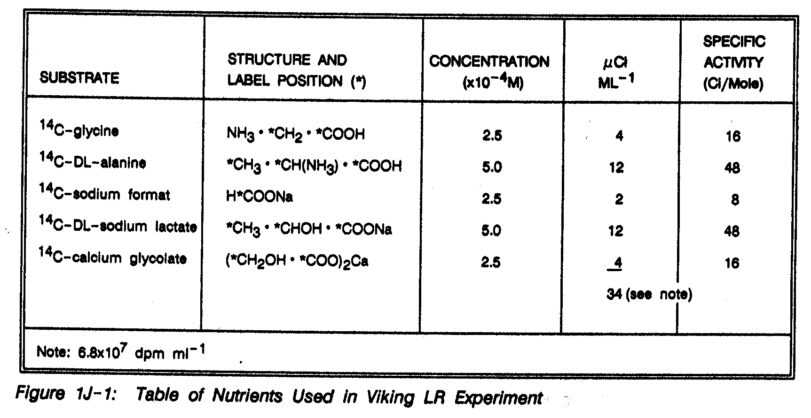
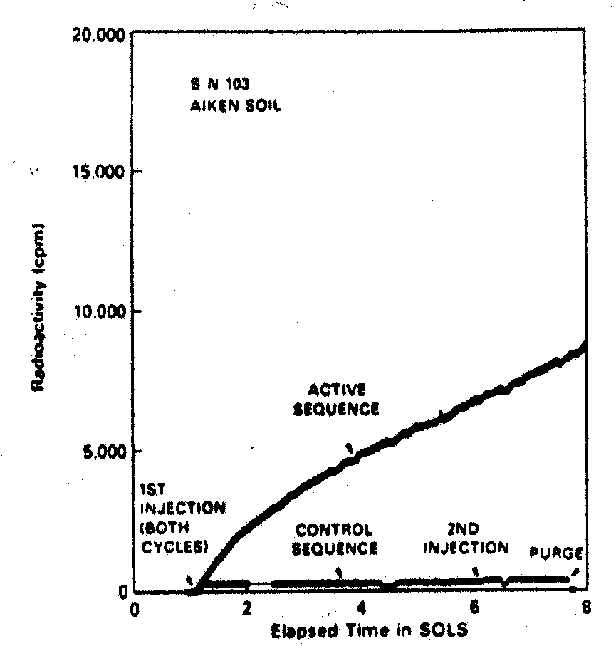
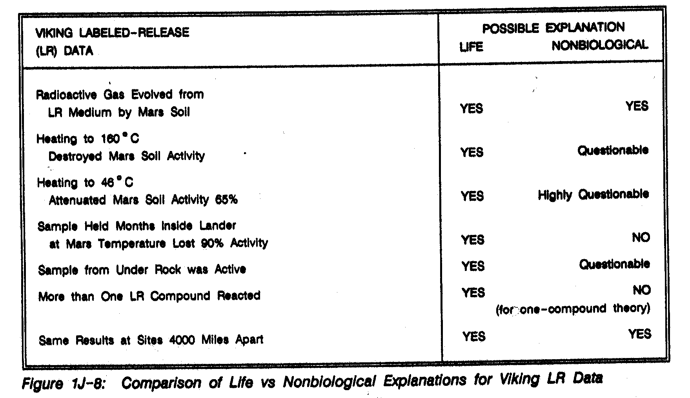
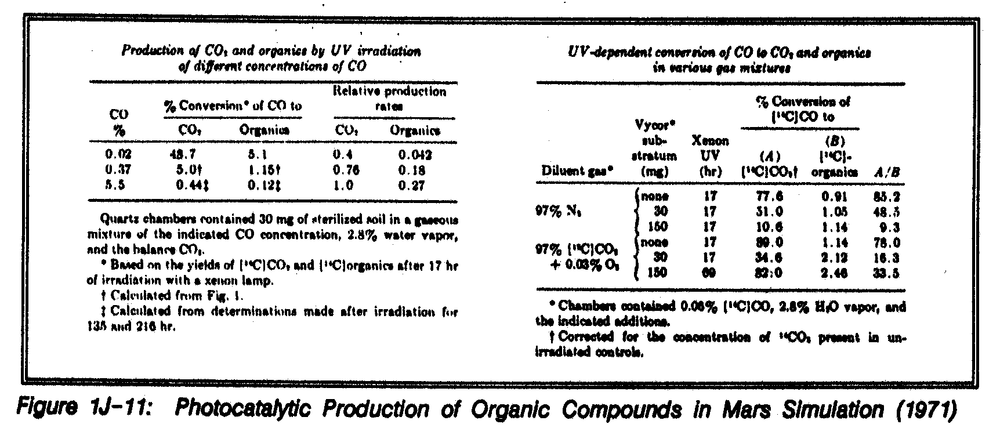
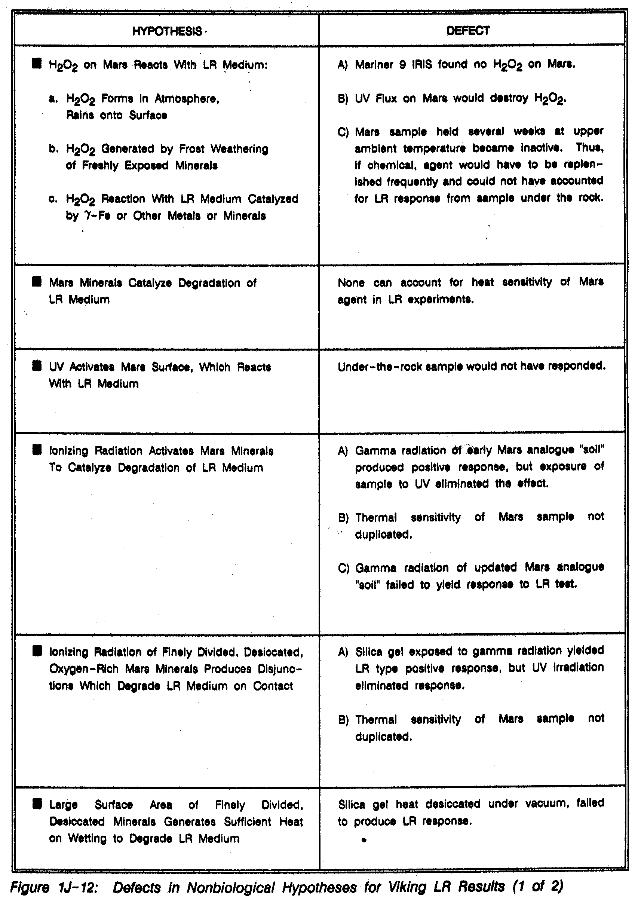
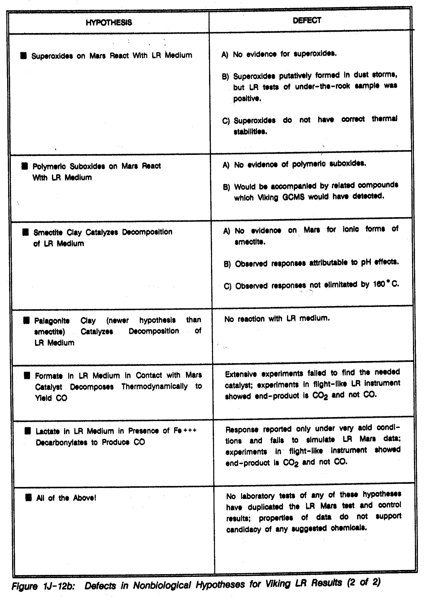

THE
NASA MARS CONFERENCE
Edited by Duke B. Reiber
Volume 71
SCIENCE AND TECHNOLOGY SERIES
A Supplement to Advances in the Astronautical
Sciences
Proceedings of the NASA Mars Conference held
July 21-23, 1986, at the National Academy of Sciences, Washington, D.C.
Published for the National Aeronautics and
Space Administration and the American Astronautical Society by Univelt,
Incorporated, P.O. Box 28130, San Diego, California 92128
A
REAPPRAISAL OF LIFE ON MARS
[NMC-1J]
Dr.
Gilbert V. Levin
Biospherics
Incorporated
Dr.
Patricia A. Straat
National
Institutes of Health
|
A decade has passed
since the first labeled-release (LR) Viking biology experiment produced an
astonishing positive response on Mars. But that response was deemed
unconvincing when no organic compounds was found. As a result, many attempts
have been made to explain the LR data without invoking life. The dominant
theory expounded hydrogen peroxide as a chemical agent, suggesting that it
reacted with one of the nutrient compounds to mimic a biological response. This
theory was tested and essentially disproved on Mars. There is in fact no
evidence that it exists on Mars, and even if it formed it would be destroyed by
the environment long before it could affect an experiment. We have carefully tested
all of the nonbiology theories and have found none to be scientifically
adequate. We also verified that the GCMS organic detection sensitivity may have
missed very low densities of organic matter. It is now our contention that the
survival of the LR data, together with other information not previously
considered (including Viking lander image and spectral data that suggest the
possible existence of martian lichen), justifies the conclusion that it is now
more probable than not that the LR experiment did in fact detect life on Mars. OPENING COMMENTS AND REVIEW It is great to get back to the subject of life on Mars. I took issue
with the title originally pro- posed for my presentation(1)--A
Second Opinion--because I think all the opinion and philosophy one needs on
this topic has already been delivered and it is our intent to stick strictly to
the facts in presenting our own conclusions. It has been a decade now since martian soil was wetted with labeled
nutrient (radio-carbon. 14C) in the Viking labeled-release (LR)
experiment. yielding the astonishing result of a rapid and continuing evolution
of radioactive gas over a period of eight days. Figure 1J-1 is a table of the
nutrients used in the LR experiment [Levin and Straat(2), 1976].
When the positive signal came back from Mars, we immediately applied the
control procedure we thought we would never have to use --we heated a control
portion of the same sample to 160ºC (320ºF). It produced no response.
Therefore, the preflight criteria published for the experiment (blessed and
approved by NASA. the National Academy of Sciences. the Space Sciences Board,
et-cetera) were fully demonstrated.  Level of Confidence
Prior To and During Mission In spite of the initial positive results, however, our Viking LR data
were deemed unconvincing because of the lack of supporting data from other
experiments on the landers, notably the search for organic matter. This
reflected a change in scientific disposition, in that during preparations for
the mission we had been told by NASA that it had selected the three experiments
for the Viking biology package(3) such that each would test a
different model for potential martian life. It was understood at that stage,
then, that only one of the three experiments might return a positive response,
were there truly life on Mars, and that such independent data would most
probably be strong enough on its own merit to substantiate the detection of
life. Failure to Find Organic Matter --The molecular analysis experiment, utilizing a gas-chromatograph/mass-spectrometer
(GCMS) specifically designed for the Viking mission, failed to find organic
compounds in the martian soil. This indeed created a problem for our results,
because it is difficult to suggest that life has been detected where no organic
matter can be found. With no organic chemistry detected to support the positive
conclusions suggested by the LR responses, many attempts were immediately made
to explain the results without invoking life. However, none of these explanations has been adequate to the task over
the ten-year period since our data were acquired. Indeed, it is our contention
that the survival of the LR data in the face of these attempts to discredit
them, together with possible visual (photographic) evidence of martian life
produced by the lander cameras (and other data heretofore not considered with
respect to this question), now justifies the conclusion that it is more
probable than not that the LR experiment did in fact detect life on Mars. Instrument Performance Integrity --The Viking LR experiment represented a fifteen-year test and
development program(4). It was extraordinarily sensitive and could
detect as few as several cells per cc of soil. In hundreds of laboratory and
field tests, it never once provided a false positive response. The test program was concluded with a full-up experiment in a proof-test
instrument identical to the one flown to Mars; with the exception that, because
we had no martian soil, we instead used some California soil provided by NASA.
Prior to the experiment, the soil was exposed for three days to a simulated
environment modeled on the best-available experience for what was anticipated
on Mars. Labeled-Release
Results on Mars In Figure 1J-2, representing results of the pre- Viking tests using the
California soil, a response is seen to rise quickly to about 10,000 counts per
minute (cpm) during the eight-day period of a single experiment cycle, which
represents the standard cycle period pre-programmed into the LR Instrument.
Elevating the temperature of a duplicate (control) sample to 160ºC for three
hours prior to testing it produced essentially a negative response. The test
results illustrated were produced under simulated Mars environmental conditions
with a moderately populated terrestrial soil. However, results were equally
dramatic following the actual landing on Mars.  Figure 1J-2: Responses From California Soil;
Natural (active) and Sterilized (control), Performed In Simulated Mars
Environment VL-1 LR Results --Four cycles of Viking experiments conducted by the first lander (VL-1)
on Mars(5) are illustrated in Figure 1J-3: two actives and two
controls. The active cycles reflect the same kind of response seen in the
terrestrial experiment previously illustrated (Fig. 1J-2), with measurements in
the 10,000 to 15,000 cpm range. The on-Mars control cycles produced responses
essentially at the background level for the instrument, although background
levels on the Mars landers were somewhat higher due to radiation from the two nearby
nuclear power generators(6). VL-2 LR Results and the UV Theory --At the second landing site(7), the same sort of result
evolved as we processed the first VL-2 sample. Initial VL-2 results are
illustrated in Figure 1J-4. One of the nonbiological explanations almost
immediately theorized by some was that ultra-violet (UV) light striking the
surface of Mars somehow "activated" the soil to produce the positive
response. At the VL-2 site, however, we were able to get additional data to
test that particular theory by manipulating the experiment from Earth. The
lander control engineers cleverly extended the soil sampler before dawn one
morning (to avoid UV radiation exposure for a sample being retrieved), moved a
small rock that had provided UV shielding for the small area of soil beneath it
for perhaps a few hundred thousand or even millions of years, and acquired a
sample of that protected soil for analysis. Only slightly weaker, that sample
also responded in the active area at about 8,000 or 9,000 cpm. Adapting the Experiment to Mars --Based on Viking experience, we then further modified the pre-mission
experiment criteria such that our on-Mars results would be more acceptable to
the scientific community. Initially, for example, if we had gotten a zero response
after heating a duplicate soil sample (as a control for one that had produced a
positive response) to 160ºC, the result would have been construed as evidence
that the positive response had in fact evolved from living organisms that could
be destroyed by the high temperature used during the control procedure. To improve the basis of that control for Mars, we wanted to adjust the
test criterion to a more conclusive temperature. We ultimately succeeded in
reducing it to Just 50ºC (122ºF), a relatively severe (warm)--though not
necessarily or immediately destructive--temperature on Mars(8). Our
chemistry-oriented colleagues agreed that this temperature would likely be able
to damage Mars organisms without inhibiting the chemical reactions they
believed were mimicking life and producing our results. If our data were in
fact due to a chemical reaction, the response should not have been reduced at
that temperature. Instead, as seen in Figure 1J-4. the result was a response
reduction of about 65%, which is more in keeping with what one might expect had
a quantity of living organisms been attenuated at that modest temperature.
Clearly, then, this experiment provided further support for a biology
rationale. Effects of Long- Term Sample Storage --Another analysis opportunity, however, afforded through what might be
called "inadvertence" or serendipity, proved to be even more
important. We were able to test a sample that had been held in the sample
collection hopper for two to three months. A portion of the sample had been
tested at the time of its acquisition and had produced a positive response.
Aside from the fact that it was then retained in a dark box (inside the lander
a couple of feet above the surface of Mars) and maintained there at a
temperature of about 10ºC, nothing had happened to that sample. The negative results of this analysis are reflected as Cycle 5 (Fig.
1J-4). At ambient temperature, the disappearance of an indigenous chemical
merely placed in a dark box is hard to explain. Because of the nature of this
particular sample and the results of its analysis, one is led to conclude that
something mysterious was indeed going on, e.g., the evaporation of hydrogen
peroxide (after causing the LR response). In the case of hydrogen peroxide,
however, it would have been necessary for it to reform every day in amounts
large enough to produce the response. The alternative, of course, is that
something had died. MARS AND EARTH
EXPERIMENT SAMPLES IN COMPARISON Had the strong positive response we got on Mars been produced by Earth
samples, as indeed similar results often were, the data would have served as
unquestionable proof for the presence of organisms in the soil. At the very
least, the scientific community should grant that the Viking LR data are evidence
for life on Mars. It has been stated by others that "there is no
evidence" for life on Mars. Evidence is defined as being distinct from
proof, in that evidence is something to be considered when trying to determine
whether proof exists. While I have never claimed the latter, I DO submit that
our experiment produced scientifically sound evidence for martian life, and
that it is for the future to determine whether it is or is not associated with
proof of martian life. Differing Earth and
Mars Results The LR results were not without some disappointments. When a second dose
of nutrient was applied to martian samples (following the completion of cycles
during which positive responses were detected), we anticipated--as was usually
seen in terrestrial samples--a renewal of gas evolution as a result of new
growth. However, there was no increase when the second injections were made on
Mars after the eighth sol(9), as Cycle 1 at the VL-1 site
demonstrates in Figure 1 J-5. Indeed, a decrease in the amount of gas in the
atmosphere of the test cell is clearly defined. The lack of gas production
following the second injection of nutrient led some to conclude that no life
was present in the soil. Terrestrial Analogue --We more recently reviewed our library of results with terrestrial
samples in search of data reflecting a response behavior similar to our Mars
results, and found Antarctic test soil No. 664(10). In that soil (pH
= 8.1), which initially produced a positive response with the first injection,
we found that some of the gas had been readsorbed following the second
injection and that the analysis essentially mimicked the Mars result. The
pertinent data from this experiment are reflected in Figure 1J-6. In this soil,
then, which had been shown to contain microorganisms [Cameron et al. 1970a]
in classical microbiological tests, we demonstrated the death of those
organisms after eight days (in Viking LR test instrument at 23. C). Could this
not have happened on Mars? The Hydrogen Peroxide
Issue Factors Involved In Formate-Peroxide Theory --After the initial positive results were known, the theory expounding
hydrogen peroxide (H2O2) was almost immediately proposed
as a non- biological explanation. It suggests that hydrogen peroxide
continually forms in the martian atmosphere and precipitates to the surface,
where--when taken into an experiment like our LR Instrument--it can react with
one of the labeled nutrient compounds, 14C-sodium formate. Indeed,
the theory held that formate was the only labeled compound in the LR nutrient
that would react with peroxide. Each of the seven substrates (includes the D
and L forms as separate compounds) comprising the LR nutrient (ref., Fig. 1J-1)
is capable of generating up to about 15,000 cpm, and since the positive
responses on Mars were typically at or below that count, they were viewed as
evidence of the formate-peroxide reaction. Testing Peroxide Theory on Mars --Fortunately, we were able to test that theory on Mars. Using a sample
that had yielded a low but positive result, we heated it terminally to 50ºC.
Doing so drove an additional 15,000 cpm out of the soil as illustrated in
Figure 1J-7, for a total yield of some 20,000 cpm. Clearly, then, the result
exceeded the count possible if only the formate-peroxide reaction were taking
place and implies that more than one nutrient was involved in the Mars
response. CONSIDERATIONS AND CONCLUSIONS BASED ON MARS
LR RESULTS It is worth exploring the Mars LR data to see how the facts can best be
explained using bio- logical and/or nonbiological arguments. For example,
radioactive gas did in fact evolve from the medium, and while this can be
attributed to life it might also be due to an unusual physical condition or
compound in the soil. In this case, then, each scores a definite Yes as
illustrated in Figure 1J-8.
 Control Opportunities --Temperature obviously plays a role in the nature of the response, and
control temperatures are particularly worthy of note. Heating a duplicate
sample to 160ºC destroyed the activity that caused the initial positive
response. This satisfies the criteria originally established for the
experiment's ability to detect life and it puts a Yes in that column. However,
some of the chemical arguments cast some doubt on those initial criteria, hence
the nonbiology column can be marked as "questionable" rather than
with an absolute No. Heating a sample only to 46ºC attenuated the soil activity
by 65%, which again is completely compatible with the argument for biology and
does not reflect the anticipated behavior for a nonbiology explanation. One
would have to score this control a Yes for life and "highly
questionable" for the nonbiology argument. Long-Term Sample Quarantine or Protection --A sample held for a long period of time inside the lander at ambient
Mars temperature lost ninety percent (90%) of its previous active response.
That kind of reduction does not appear to correlate with any nonbiological
theory yet offered, and therefore earns a Yes for the biology argument and a No
for the nonbiology argument. The response obtained from soil acquired from
beneath (and previously shielded by) a rock again records a Yes for the biology
argument, and, at the very least, seriously questions the theory that UV or
ionizing radiation was responsible for the positive LR response. Causal Factors Concerning Type of Response --I believe the probability that more than one LR nutrient compound had
to be involved (to produce the total test count already discussed) overpowers
the theory that formate alone, reacting with hydrogen peroxide. could have
produced our results. Indeed, it renders the nonbiological argument virtually
impossible when based on only one nutrient compound. However, the fact that the
same results occurred 4,000 miles apart can be equally attributed to living
organisms or to a uniform, global distribution of a suspect soil constituent(11).
Microorganisms are distributed with surprising uniformity on Earth, relative to
similar soils and conditions, and the Viking landing sites on Mars were so
similar that they might well support equal microbial populations. In the same
sense, however, the similarity of the soil chemistries determined at those
sites might allow for similar nonbiological reactions. The Lack of Organic
Chemistry in the Soil While all of the factors I have just reviewed seem to add up to strong
support for a biological explanation, a major negative result remains to be
dealt with: the failure to detect organic carbon in Mars' soil (at both Viking
lander sites). This fact, coupled with the belief that UV radiation may have
precluded the development or existence of organic compounds, suggests that the
martian environment is simply too hostile to life. We believe we have established a sound answer to that constraint, as
reflected in Figure 1J-9. Central to our argument is a body of evidence
indicating that the sensitivity of the GCMS was too low to detect a very low
density of organic compounds in another viable Antarctic soil sample provided
by NASA. Further, experimental evidence already alluded to by Dr. Horowitz
[NMC-11] strongly supports the probability that organic matter not only forms
but accumulates on the surface of Mars in the very face of the UV flux to which
it is deemed so vulnerable. Figure IJ-9:
Questionable GCMS Sensitivity for Detection of Low Density Organics Organic Matter and Life In Test Sample
Undetected by GCMS --While reviewing the Mars data, we found
still another interesting Antarctic soil sample. Number 726. This sample, also
provided for the experimenters by NASA, was brought back and maintained--as in
the case of all such samples--in a sealed. pristine condition to preserve its
original quality for testing. It had revealed no organic material during such
tests in a test-standards GCMS Instrument, but a wet-chemical analysis of the
soil showed that it in fact contained 0.03% organic carbon. We had received an
aliquot of the same sample in our laboratory. and I found that we indeed had
tested it in the LR Instrument. Figure 1J-10 illustrates the results of that work. Clearly, we had
detected living organisms in that soil, and the results of the second injection
as well as the sterile controls verified that the response was produced by
those organisms. These results, then, reflect a compatible truce between the negative
findings of the GCMS and the positive LR results. A Link Between UV and Organic Generation -- Turning to the questions posed by possible UV effects, an answer has
been found in the literature where we should have found it long ago. In his
Mars Conference presentation, Dr. Horowitz has described a significant problem
he and his group [b] encountered while developing the Viking
pyrolytic release (PR) biology instrument, which threatened to remove the
experiment from the mission. The substance of the problem, as reviewed in
Figure 1 J-11, was that, with Mars light (including UV) shining on Mars
atmosphere under simulated martian conditions, organic matter formed and was
deposited on the simulated soil particulates. In addition, the organic material
continued to accumulate over time. The authors of the paper from which Figure
1J-11 was taken [Hubbard, Hardy, and Horowitz. 1971] stated, "Our findings
suggest that UV presently reaching the martian surface may be producing organic
matter. ... the amount of product formed could be considerable over
geological time."  The problem was resolved in the PA experiment by interposing a filter to
screen out UV light below 3,000 angstroms, but that of course does not prevent
the phenomenon from occurring on Mars. The formation and accumulation of
organic matter under UV light was subsequently confirmed in a paper published
in the JACS [Farris and Chen, 1975], in which they demonstrated the production
and accumulation of organic material by shining UV light on a mixture of
methane and water vapor. They concluded that this phenomenon--the accumulation
of organic matter under UV--has "pre-biological significance." Clearly, then, there is a good case not only for the formation of
organic matter in the martian UV environment, but for its accumulation. Indeed,
if there is a problem suggested by the body of data produced by the Viking GCMS
on Mars, it is the question of why the instrument was unable to detect organic
matter that must certainly be there. When considered in perspective with the
proven need for greater sensitivity than the Instrument could muster during the
analysis of Antarctic sample 726, one must at least agree that the GCMS may
have been unable to detect similar densities of organic matter on Mars -- remembering,
too, that the terrestrial sample contained living organisms. Hydrogen Peroxide:
Pro and Con Why, then, were no martian organic chemicals detected when, even without
life, their formation on Mars seems so probable? Could they have been overlooked
as I have just suggested? Most probably not, if the hydrogen
peroxide theory prevails with its soritical capacity for converting the LR
experiment into a hydrogen peroxide meter. However, we again have found
empirical evidence that argues against hydrogen peroxide, this time a product
of NASA's Mariner 9 mission (1971-72). Dr. Straat and I were co-experimenters with R.A. Hanel and others on the
Mariner 9 infrared Interferometer spectrometer (IRIS) experiment team. While
wrestling with the hydrogen peroxide issue associated with Viking results, I
realized that there could be some pertinent data hidden in the product of the
Mariner 9 mission. I called Bill Maguire [Goddard Space Flight Center], a NASA
scientist formerly associated with the Mariner 9 IRIS work, and asked if there
may have been a window provided by the IRIS instrument that could detect
hydrogen peroxide. After a brief review of the data, he informed me that there
was indeed an excellent window for hydrogen peroxide -- and that none had been found. A Review of Nonbiological Hypotheses Figure 1J-12 (a and b) presents a compilation of all the hypotheses that
attempt to explain the LR results in a non biological manner, and which have
been published or otherwise called to our attention. The first, of course, is
the hydrogen peroxide theory (which also represents several subset theories),
and it includes a rationale for how peroxide forms and exists on Mars. Because the Mariner 9 IRIS instrument found no trace of hydrogen
peroxide on Mars, one can at least presume that if it is there at all it must
be present only in extremely small amounts. And, because of the amount of
atmospheric water vapor detected by the Viking orbiters in the vicinity of the
landing sites, any small amount of hydrogen peroxide that may have been missed
by Mariner 9 would somehow have to survive a confrontation with up to 5,000
times its own volume in atmospheric water(12); if water vapor
immediately reacts with hydrogen peroxide, as Dr. Horowitz has explained, the
hydrogen peroxide would not have been present. If water vapor doesn't do the
job, one should remember that hydrogen peroxide is light-labile and especially
vulnerable to virtually immediate destruction by UV radiation(13),
or that contact with iron or other possible metal catalysts in the surface
material (aided by atmospheric water vapor) is also capable of destroying it.
Assuming either or all of these destruction scenarios to be active on Mars, one
is driven to conclude that any hydrogen peroxide that somehow managed to find
its way into the martian soil would certainly have been destroyed long before
it could be picked up by a Viking surface sampler and exposed to our LR
nutrient. Other nonbiology theories involve: minerals that catalyze the reactions
with the LR nutrients, ultra-violet radiation (already discussed), ionizing
radiations of various kinds. finely divided and desiccated oxygen-rich
minerals, and large surface areas of fine particulate generating heat of
hydration upon wetting. We and others have tested all of these proposals, and
none of them could provide a fully satisfactory explanation for--or a
duplication of--the provocative responses we got from the LR experiment on
Mars. If we can't evoke a tenable hypothesis for a chemical or physical reaction
that can duplicate the Mars results after ten years, perhaps it is finally time
to consider the biological explanation we were looking for in the first place.
Perhaps, after all, we did indeed detect life on Mars. A CASE FOR LICHEN ON MARS We have a natural model for one possible martian life form close at hand
--lichen. In fact, the lichen possibility was offered as a model for martian
life long ago, and such organisms possess all the characteristics necessary for
survival in the harsh martian environment. They serve as a good model for Mars
life because their known characteristics satisfy virtually all of the criteria
imposed by the nature of the results in both Viking LR experiments. on Earth.
Lichens are the pioneers of vegetation and are frequently credited with the
initiation of weathering over large areas.   Lichen can: 1) grow on bare, unweathered desert and mountain top rocks
in extremely hot or cold environments, 2) protect themselves from UV radiation,
3) withstand long-term desiccation, and 4) absorb water from atmospheric vapor.
In addition to being able to grow on bare rocks in inhospitable regions, they
exhibit "endolithic" capability -- growing and surviving within rocks. It should be noted that many forms of terrestrial biota could inhabit
Mars but for the apparent lack of liquid surface water and the difficulty in
husbanding water from the atmosphere against the low vapor pressure. However,
we should not close our eyes to the latter possibility. In juxtaposition, one
might well imagine martian scientists looking down on Earth and saying: “There
can't be any plants or trees on that poor planet, there is only 125
parts-per-million of carbon in the atmosphere!" I think the arguments are
fairly comparable. We have found that lichen organisms can essentially--quite
satisfactorily, in fact--replicate the LR results in all respects. And, while
it is not appropriate to get into the details of these studies here, I will
present some photographic material that suggests to us (under very close scrutiny)
that the Viking lander images may in fact have provided evidence of lichen
growth on Mars. Possible Evidence of
Lichen on Mars Figure 1J-13 presents two images of a rock known as Patch Rock at the
VL-1 (Chryse Planitia) site. The image was produced at JPL by the image
reproduction system developed specifically for the precise production of Viking
lander images from digital data transmitted back to Earth from Mars. In this
picture pair, one can see for the first time a hint of something not monotonously
orange-red, as initially reported about Mars. Instead, greenish patches are
seen on some of the small rocks. We found that the configurations of the
patches changed over a period of time. The picture on the left was taken on sol
28/VL 1 and the one on the right was taken sol 615/VL1(14). A lot
had of course happened over the intervening 587 sols which affected the
character of the site; there had been some digging by the lander's surface
sampler and there had been a dust storm. However, the intensification of the
greenish color and a change in the appearance of the rock's patch was not
readily explained by these events. Spectral analyses were made of these images at JPL, and the patches
proved to be the greenest and least color-saturated objects in the field of
view. Figure 1J-14 illustrates the results of a color-saturation analysis
involving the same rock, this time using pictures taken sol 1/VL1 and sol
302/VL1. A change in the response over time was evident, and, of all the
features in the field of view (of whatever color), the spots and patches
highlighted were the least color saturated. I should point out, incidentally,
that lichens come in many colors: red, yellow, pink, gold --even white, black,
and colorless. The presence of greenish colored patches were subsequently
verified by others [1979c]. Lichen Detection
Tests With Viking STL Imaging System Because Viking mission operations were still underway as we were
conducting these initial analyses, we took some lichen-bearing rocks to JPL and
put them in a simulated Mars terrain model that had not yet been dismantled(15).
We took pictures of them using the science test lander (STL) Imaging cameras
(identical to the flight cameras), and Figure 1J-15 presents the results of
that work (top); the picture at the bottom is a conventional photograph of the
modeled terrain for the landing site, which included highly detailed foam
duplicates of rocks at the site (painted to look like the real rocks). The
greenish lichens on our sample rocks were less clearly visible than in Earth
sunlight and resembled the Mars images. When we subjected these pictures to a
color-saturation analysis similar to the one I spoke of in reference to the
actual Mars images, the Earth lichens were again the least color-saturated objects
in the field of view. Figure 1J-15: Viking Test Image of Terrestrial
Rock Lichen (top) STL Test Scene (bottom) Antarctic Rock Correlates With Mars Results --Working in the Antarctic, Friedmann and Ocampo [1976] discovered that
there were living organisms--algae and lichen--below the surface of many porous
sandstone rocks(16). These organisms are typically found at a depth
of about 1 to 1.5 cm and are somehow "eking" out a living inside
these Antarctic rocks, with very little sunlight or water able to penetrate to
their depth. Indeed, they seem almost to be hiding from it, and it is in fact
likely that they have evolved their retreat from rock surfaces to escape the
harshness of the Antarctic environment. In Figure 1J-16, a relatively common
sample of rock with surface lichen is compared with a sample of Antarctic rock,
the latter split to reveal the lichen-bearing layer beneath its surface (dark
band along top of exposed face). Summary Results of Imaging Experiments -- In Figure 1J-18, we have summarized the results of the imaging study
in the same manner as the previous summary of the LR data (Fig. 1J-8). The
greenish spots or patches could be attributed to life; alternatively, chemicals
or minerals could be responsible. The changing configuration of the patches
with time, however, is strongly suggestive of life and is not easily explained
by mechanical or meteorological events. In summary, then, we feel that the evidence produced during the imaging
studies thus far undertaken is more indicative of life than of chemistry or
physics. In the near future we hope, and have so proposed, to try to resolve
this problem through access to additional image data being maintained in the
Viking database. SUMMATION AND
CONCLUSIONS We have waited ten years for all of the theories, experiments and
results produced by the many scientists investigating our experiment to be
reviewed before voicing a committed conclusion of our own. After examining
these efforts in great detail, and after years of laboratory work trying to
duplicate our Mars data by nonbiological means, we find that the preponderance
of scientific analysis makes it more probable than not that living organisms
were detected in the LR experiment on Mars. This is not presented as an opinion,
but as a position dictated by the objective evaluation of all relevant
scientific data. In conclusion, then, we submit that this real possibility for martian
biology should be an important--even dominant--consideration in the future
exploration of Mars. This clearly is not the case at the present time,
according to published NASA plans for continuing the unmanned exploration of
Mars which neglect the biology issue. The search for life on Mars, when
evidence for its possible existence offers such important potential, should
have much greater significance for the planning of such missions. REFERENCES References identified here by alphabetically sequenced lower-case
characters are keyed to specific references in the presentation text
where the same characters are used as identification tags. In the text,
however, the identifier will be found within brackets, either by itself or with
a name and/or credit date (i.e., when formally published) --e.g., [a]
or [1978a]. NOTED PRESENTATION REFERENCES (see following
page for additional references) [a]Cameron, R.E., King, J., and Daird, C.N. 1970. Antarctic Ecology, Vol. 2, p. 202 (Holdgate, ed.), London. [b]Hubbard, J.S., Hardy, J.P., and Horowitz, N.H. 1971. Proc. Nat. Acad.
Sci. 3:574-578. [c]Strickland, E.L., III. 1979. NASA Tech. Memo. 80339. [d]Guiness, E., et al. 1979. NASA Tech. Memo. 80339. (1)Because the original title alluded to was incorrectly reflected in the
conference agenda, it was not used in this proceedings document. {Ed.} (2)Dr. Patricia A. Straat was Dr. Levin's principle colleague during the
development, testing, and mission operation/analysis work associated with the
Viking biology LR experiment. In addition, she worked with Dr. Levin and others
on the Mariner 9 IRIS experiment. {Ed.} (3)The Viking biology package was remarkably miniaturized. It contained--in
one small complex box--three independent experiments designed to detect
possible life processes in the martian soil (based on different models of
Mars). The package itself. weighing only about 33 pounds and measuring 11.5 x
13.5 x 10.75 inches (with a volume of 1.669 in.3), was built by TRW.
In addition to the labeled-release experiment. the instrument also contained
gas-exchange and pyrolytic-release experiments. a complex array of plumbing and
electrical circuitry, and the necessary mechanics to facilitate soil processing
and distribution. Each of the experiments was capable of four cycles. and all
of the experiments in both landers were successfully operational on Mars,
experiencing few instrument problems and no failures. {Ed.} (4)The labeled-release (LR) experiment had its origin in 1959 when Dr.
Levin first proposed and then--in 1960--began development of a self-sufficient
sample acquisition and analysis instrument called Gulliver. It was to fly on
what was then called the Voyager (Mars) spacecraft, it didn't, of course,
because that Voyager program was canceled and then scaled down to become the
Viking Project. However, Gulliver was not wasted; its essential elements served
as the precursor for the Viking biology instrument's labeled-release (LR)
experiment discussed in this presentation, {Ed.} (5)Viking Lander 1 (VL-1) landed in Chryse Planitia (at 22.5ºN, 48ºW) on
July 20,1976. {Ed.} (6)Each Viking lander was equipped with two plutonium-fueled, AEC SNAP-19
Radioisotope Thermoelectric Generators (RTG's), mounted atop the landers and
protected by windscreens. The RTG's were capable of producing 35 W each (total
output of 70 W per lander), and were used to provide both direct power and
recharging power for two internal wet-cell, nickel-cadmium battery packs (two
28vdc, 24-cell batteries in each pack). RTG's facilitate non-solar-dependent
power for very long periods, and VL-1 survived into late 1981. {Ed.} (7)Viking Lander 2 (VL-2) landed in Utopia Planitia (at 44ºN, 226ºW) on
September 3, 1976. {Ed.} (8)A temperature of 50ºC (122ºF) is very warm for an otherwise cold planet
(compared to Earth). The Viking landers recorded daytime temperatures in the
–25ºC to –35ºC range, dropping at night to –85ºC to –90ºC during the martian
summer. However, it is believed that temperatures at the very surface may, in
some areas (e.g., equatorial regions), be significantly warmer (25ºC+). This
potential is enhanced when correlated with higher atmospheric pressures and/or
the presence of water vapor associated with some topographic features. {Ed.} (9)A "sol" is one solar day for Mars, While a martian day is
comparable in length to an Earth day, it is somewhat longer (24h37m22s).
This requires that sols rather than Earth days be used as an independent
chronological reference when the planet's axial rotation is a pertinent factor
in a given consideration. This, of course, is particularly true at the surface
of Mars where darkness prevails at night just as on Earth. {Ed.} (10)Antarctic Sample No. 664 was a bonded and certified NASA-supplied soil
given to experimenters to test their instruments during the development of the
Viking biology experiments. Such samples were stored, sealed, and maintained in
their pristine condition for testing purposes. (11)It is believed that weathering and meteorology over time
on Mars is responsible for a homogeneous and generally uniform distribution of
the planet's surface chemistry. {Ed.} (12)The limit of sensitivity for the Mariner 9 IRIS experiment, relative to
its ability to detect hydrogen peroxide, was 1x10-2 precipitable
microns. By comparison, the water vapor measured above both Viking landing
sites by the orbiters' IR water vapor mapping instruments ranged up to about 50
precipitable microns. {Ed.} (13)The reaction coefficient for the UV destruction of H2O2
exceeds that of its formation by 106. (14)Because martian days (sols) are longer than Earth days, they do not
correlate directly with Earth days. For example, a martian year is 669 sols
compared to 687 Earth days. Viking lander operations are typically considered
in terms of the number of sols elapsing from the first day of each landing,
such that the sol count for each lander is different. Sol 1 for VL-1 is July
20. 1976, while Sol 1 for VL-2 is September 3. And. because there is a
difference of more than 40 sols. It is necessary to know which lander is in
reference for a given sol number -- hence the use of "/VL1" or
"/VL2" with sol numbers used in this presentation. Sol 615/VL1, for
example, represents the 615th martian day of VL-1 operations. {Ed.} (15)The Viking science test lander (STL) was used at JPL during mission
operations to program and test actual command sequences (for directing the
cameras and soil samplers on the Mars landers) before transmitting them to the
specified lander. Each landing site, therefore, had to first be modeled very
precisely with accurate reproductions of the surface material, very small
elevation variations (including trenches ultimately dug by the samplers) and
rocks -- particularly those within range of the soil sampler. Each of the STL's
two cameras could image like its counterpart on each of the Mars landers, such
that complete imaging sequences could be tested for errors prior to
transmission. {Ed.} (16)Dr. E. Imre Friedmann, a biology professor and director of the Polar
Desert Research Center at Florida State University (Tallahassee), is credited
with the first discovery of organisms living within rocks [1964] while studying
rocks from Israel's Negev desert. His Antarctic research was funded jointly by
NASA and the National Science Foundation. {Ed.} UNSPECIFIED REFERENCES OF INTEREST Cooper, H.S.F. 1980. The Search for Life on Mars: Evolution of an
Idea. An Owl Book. Holt, Rinehart and Winston, New York. Levin, G.V., and Straat, P.A. 1976a. Labeled release--an experiment in
radiospirometry. Origins of Life. 7:293-311. Levin, G.V., and Straat, P.A. 1976b. Viking labeled release biology
experiment: Interim results. Science. 194:1322-29. Levin, G.V., and Straat, P.A. 1977a. Recent results from the Viking
labeled release experiment on Mars. J. Geophys. Res. 82:4663-67. Levin, G.V., and Straat. P.A. 1977b. Life on Mars? The Viking labeled
release experiment. Biosystems. 9:65-74.
Levin, G.V., and Straat, P.A. 1979a. Status of Interpretation of
Viking labeled release experiment, (abs). NASA CP-2072, p. 52. Levin, G.V., and Straat, P.A. 1979b. Completion of the Viking labeled
release experiment on Mars. J. Mol. Evol. 14:167-83. Ed. Note: Vol. 82, No. 28 (pages 3959-4681) of J. Geophys. Res. (item 4 above) was a complete publishing of the Viking Primary Mission results (with early Extended Mission results), i.e., those results of Viking mission activity during the last half of 1976 and early 1977 that could be properly reported by mid 1977 (publish date was September, 1977). The results of--and early conclusions associated with--the Viking biology experiments are included. The results and conclusions are also modestly reviewed by H.S.F. Cooper (The Search for Life on Mars, item 1 above) as the author describes the activity and interaction of the Viking biology team's key characters, as well as the evolution and product of their work, against the backdrop of Viking mission activity. Similarly, ON MARS: Exploration of the Red Planet -1958-1978 (E.C. Ezell and L.N. Ezell, 1984, NASA SP-4212 in the NASA History Series), presents a thorough historic account of the Viking Project and includes a conservative. nontechnical overview of its science results. |